+91 74996 65426


 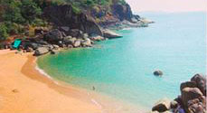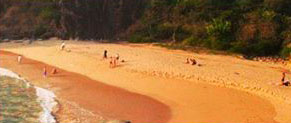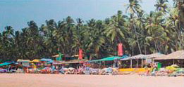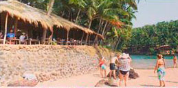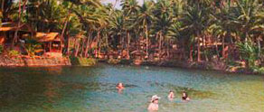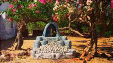
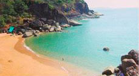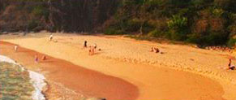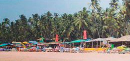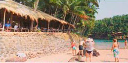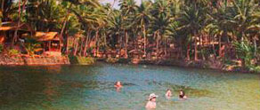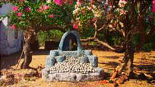

💵 Excursion price: 28$ per person.
👼 Children under 5 years old - free of charge (without a seat, in the hands of parents).
⏳ From 8:00 to 18:00. Travel time - 2 hours.
❌ Without a guide.
🐋 At the beginning you will visit Palolem beach, also known as Paradise beach, then take a boat trip to the unforgettable Butterfly island and, with any luck, you can see dolphins.
🌴 Next, you will recover on the beach of Agonda - creeping coconut palms over the snow-white sea coast.
🏰 At the end of the day, you will drive into the fort of Cabo De Rama (the largest fort in the state), from whose walls you can enjoy stunning views of the coast. Most of the fort is destroyed, but despite this, every year it attracts a huge number of tourists. The fort is named after the Hindu god Rama, according to legend, he was here with his wife Sita during the 14-day exile.
📌 Price includes:
✅ Comfortable transport with air conditioning.
✅ Tickets for a boat trip.
🎒 What to bring: bathing accessories, a towel, comfortable shoes, money for lunch.
👩🧑🧑👩 Discounts for a group
👼 Children under 5 years old - free of charge (without a seat, in the hands of parents).
Accepting bitcoin:

3Kznb8Z4skuUZp6rJJTKG91UMz9jn42Yno